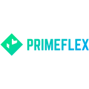
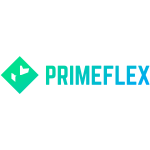
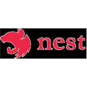
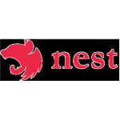
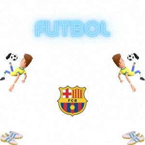
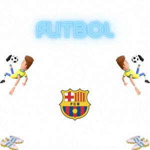

Modo Oscuro
Usando JavaScript
Otro color
Empecemos con algo complicado para muchas personas: cuéntanos quién es Jovanny Prado y por qué te haces llamar Erbarbaz?
Muy buena pregunta; un gusto saludarlos. Mi nombre es Jovanny Prado. Durante dos años trabajé como Aprendiz de Programador en el departamento de tecnología de la corporación Gigante. Durante este tiempo, mi trabajo consistió en desarrollar y diseñar sitios web para pequeñas y medianas empresas. Las herramientas que más utilicé fueron HTML, CSS y JavaScript, lo que me ayudó a mejorar mis habilidades como programador. En los últimos años, he trabajado por cuenta propia en proyectos pequeños y medianos para particulares, y junto a mi esposa, gestionamos negocios en el campo de la belleza. Tengo 2 hijos que junto a mi esposa; son mi motivación para seguir adelante. Ahora, deseo retomar la programación a tiempo completo, ya que es mi verdadera pasión. A lo largo de mi trayecto, he desarrollado habilidades para trabajar en equipo, bajo presión, y comunicarme efectivamente. Soy curioso por las nuevas tecnologías y me adapto rápidamente a los cambios. Me apasiona tanto enseñar como aprender. Busco la oportunidad de adquirir experiencia en el área de tecnología de la información, donde pueda desarrollar mis conocimientos técnicos y crecer junto a la empresa y mis compañeros de trabajo.
¿Por qué el nombre Erbarbaz? Quería un nombre diferente, único para crear contenido, y dado que siempre tengo barba, decidí jugar con eso. Al buscar nombres en diferentes redes sociales, me di cuenta de que había muchos con la palabra "barba" en sus nombres, por lo que pensé en cómo podría hacerlo diferente y así surgió Erbarbaz.
¿Qué vas a aprender?
Para mí, estudiar es importante y me encanta poner en práctica lo aprendido. Tengo una gran pasión por aprender y explorar nuevas áreas. Hay tantas cosas que quiero aprender y aplicar que siento que el tiempo no alcanza. Me gustaría tener más tiempo para dedicar a todas mis metas creativas. Busco mejorar mi velocidad y eficiencia en la creación, especialmente en animaciones y proyectos complejos. Mi deseo es explorar un sinfín de posibilidades y desarrollar habilidades en diversos campos. Quiero abarcarlo todo... ¡jajaja! Solo espero contar con el tiempo para hacerlo realidad.
¿Cuál es tu ruta de aprendizaje?
Puedes ver lo que he aprendido en mi página principal. Esta es mi ruta de estudio y práctica para el futuro:
 


¡Esto es todo! ¿Te sentirias bien al aprender esto?
Realmente será un triunfo completar esta ruta propuesta; la meta es avanzar paso a paso y tengo otras metas por cumplir. Hay muchas tecnologías por descubrir, implementar ¿y por qué no crear? En lo que respecta al diseño web, mi objetivo es convertirme en un Full Stack Developer con conocimientos en aplicaciones y desarrollo de juegos. Como mencioné anteriormente, espero que Dios me conceda salud para alcanzar todas estas metas y rutas propuestas.
Estamos observando que tienes una ruta bien establecida, ¿qué pasa si descubres que hay tecnologías que debes aprender?
Esta es mi ruta personal, pienso que el mundo del desarrollo web está en constante evolución y, como uno de mis libros favoritos Quien se ha llevado mi queso de "Spencer Johnson", hay que estar atento al cambio que nos rodea tanto en el trabajo como en la vida privada o personal, así que si en el camino me encuentro con algo que me hará hacer mi trabajo más rápido y eficiente; pues lo aprenderé, lo anexaré con gusto a mi ruta y pues algo más a mi currículum.
Has mencionado que deseas convertirte en un Full Stack Developer. ¿Cuál sería una ruta adecuada o qué camino tomarías y recomendarías a nuestros lectores?
Bueno, lo primero que debo decir es que, para mí, un desarrollador front-end se encarga de la parte estética de un automóvil; es como si te mostraran un Ferrari o un Lamborghini, pero no es solo una marca, hay un motor, una estructura interna, si no, sería solo una cáscara. Es decir, el backend es lo interno de esa máquina. Estoy seguro de que si compraras uno de estos carros y te lo entregaran sin la parte estética o sin motor, no lo recibirías. Porque tú deseas todo lo que representa este automóvil, la unión de todo esto es lo que sería para mí un desarrollador Full Stack. Con respecto a cuál sería la ruta, pues ya tengo la mía y la comparto contigo:
Para mí el backend, es indispensable que conozcas de Node.js; sin esto, sería seguir a ciegas, aunque en este mundo no hay nada imposible. Solo falta creatividad e imaginación, así que empezaré mi ruta con JS, que en mi caso ya lo aprendí. Bueno, hay mucho por aprender, solo sé un porcentaje de este monstruo.

 


A esto faltaría agregar muchas más tecnologías, bases de datos, tecnologías móviles, y un sinfín de cosas más. Creo que no terminaríamos aquí. Quiero crecer y expandir mis conocimientos, y una de mis metas es crear un juego. ¡Cuidado Blizzard! jajaja
¿Estamos observando que tienes una ruta bien establecida, ¿qué pasa si descubres que hay tecnologías que debes aprender?
Esta es mi ruta personal, pienso que el mundo del desarrollo web está en constante evolución y, como uno de mis libros favoritos Quien se ha llevado mi queso de "Spencer Johnson", hay que estar atento al cambio que nos rodea tanto en el trabajo como en la vida privada o personal, así que si en el camino me encuentro con algo que me hará hacer mi trabajo más rápido y eficiente; pues lo aprenderé, lo anexaré con gusto a mi ruta y pues algo más a mi currículum.
¿Tienes algún tipo de hobbies?
¡Claro que sí! Aquí algunas actividades y pasatiempos que me gustan hacer, y otras que planeo realizar pronto:
 
